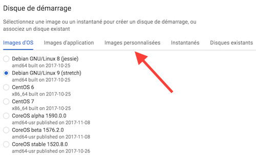
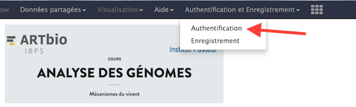

Spin off a virtual Machine
- Go to the Google Cloud Dashboard and select "Compute Engine" on the left hand menu bar
-
Select the submenu "Instances de VM"

-
Click on the top bar menu the "CREER UNE INSTANCE" panel
-
Put name
my-galaxy-server, Zoneeurope-west1-b (or c), Type de machine8 vCPU+30 Gode mémoire.
- Disque de Démarrage: Click on
Modifier
-
Select the top menu
images personnalisées(custom images)  -
Click on the rolling menu
Afficher les images deand select theMy Project - main-sunset-133416
What is important here is the identifier
main-sunset-133416 -
Check the button to select
image-1(will begalaxyat TP runtime)
-
At the bottom of the same form, choose
100 Gofor the Disk Size (Taille)
Leave the selection
Disque persistant standard/Standard persistant driveAnd press the
Sélectionnerbutton. -
Back to the main form, Click
Authorize HTTP traffic/Autoriser le traffic HTTP
- Click
Créer/Create -
After ~1 minute or so, the VM turns on "green" and an
sshmenu becomes selectable
-
Click on the http link provided in the
Adress IP externecolumn You should now be able to access to your own Galaxy server instance. -
Immediately Log in to your server as the administrator

And log in with
admin@galaxy.org:admin